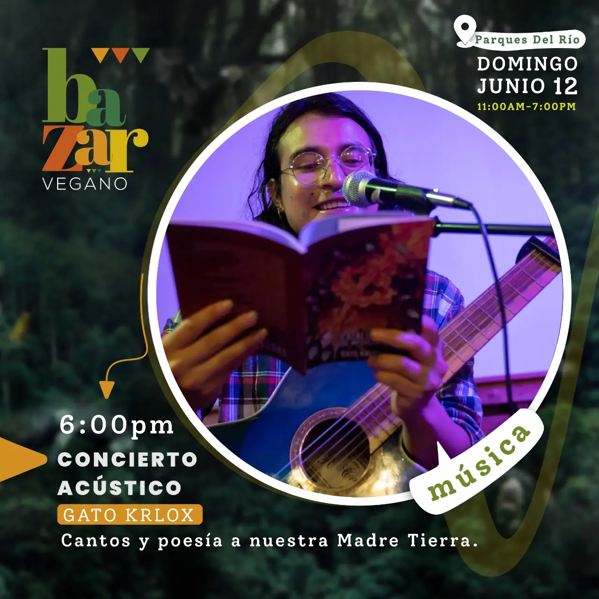
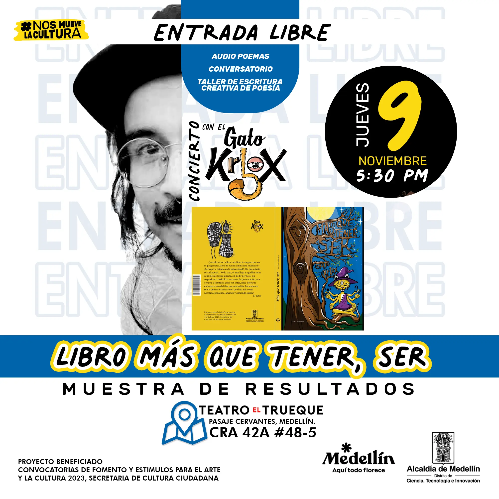
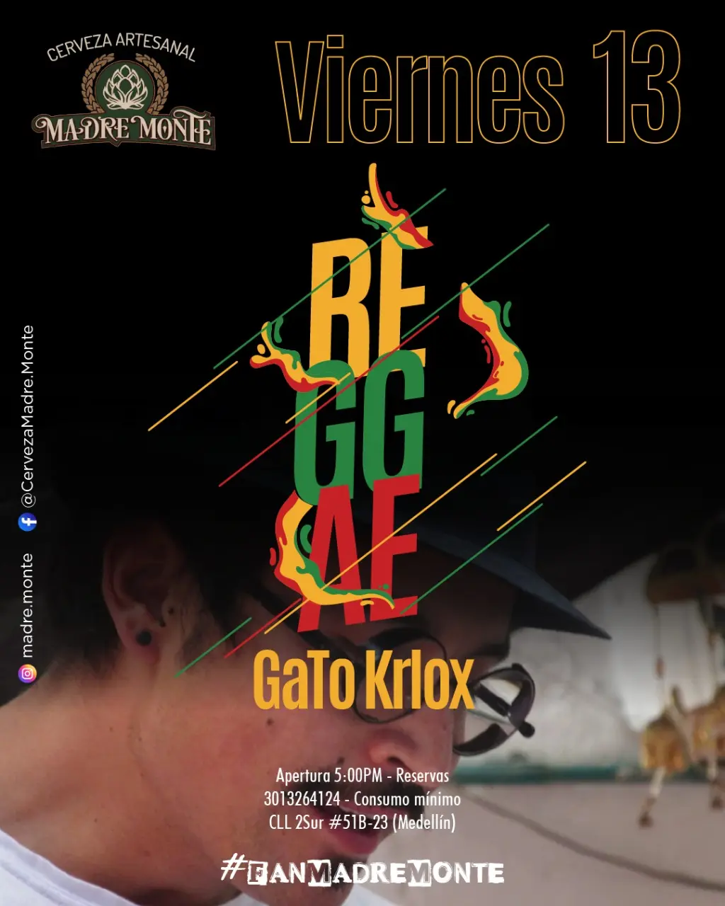
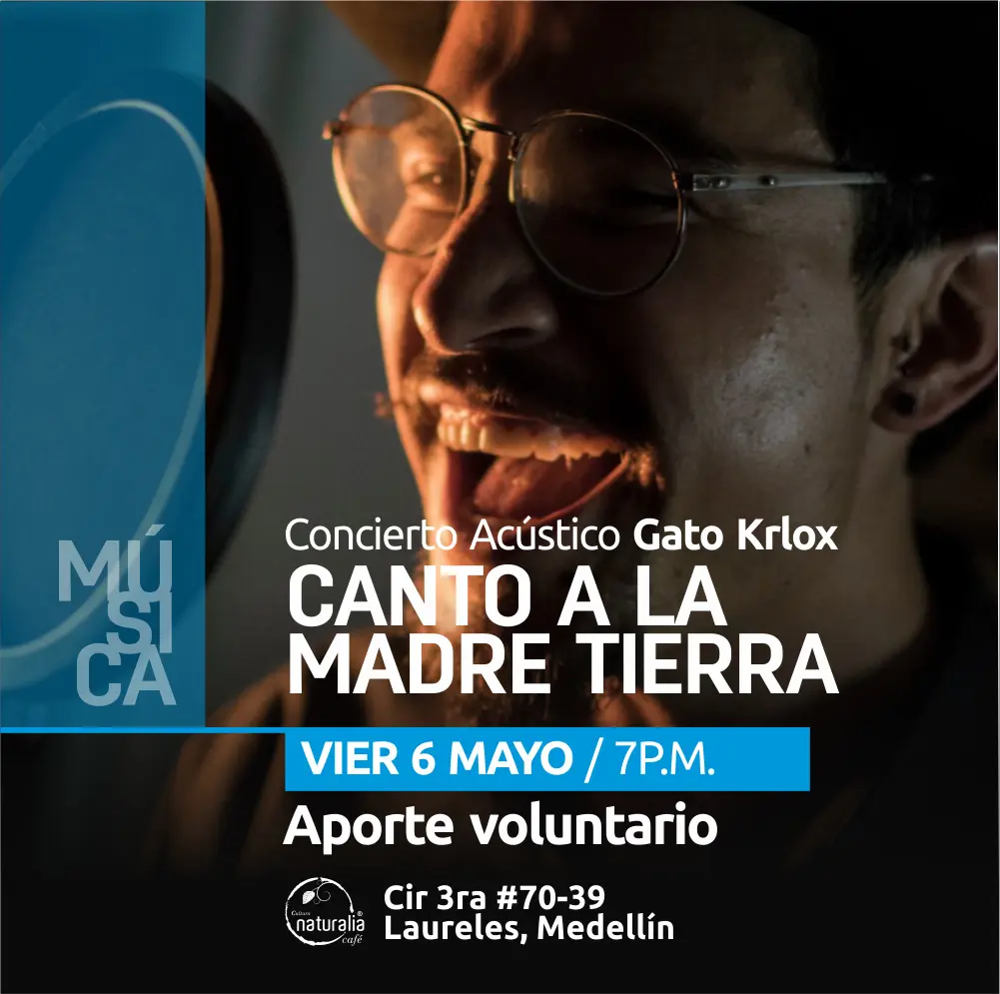
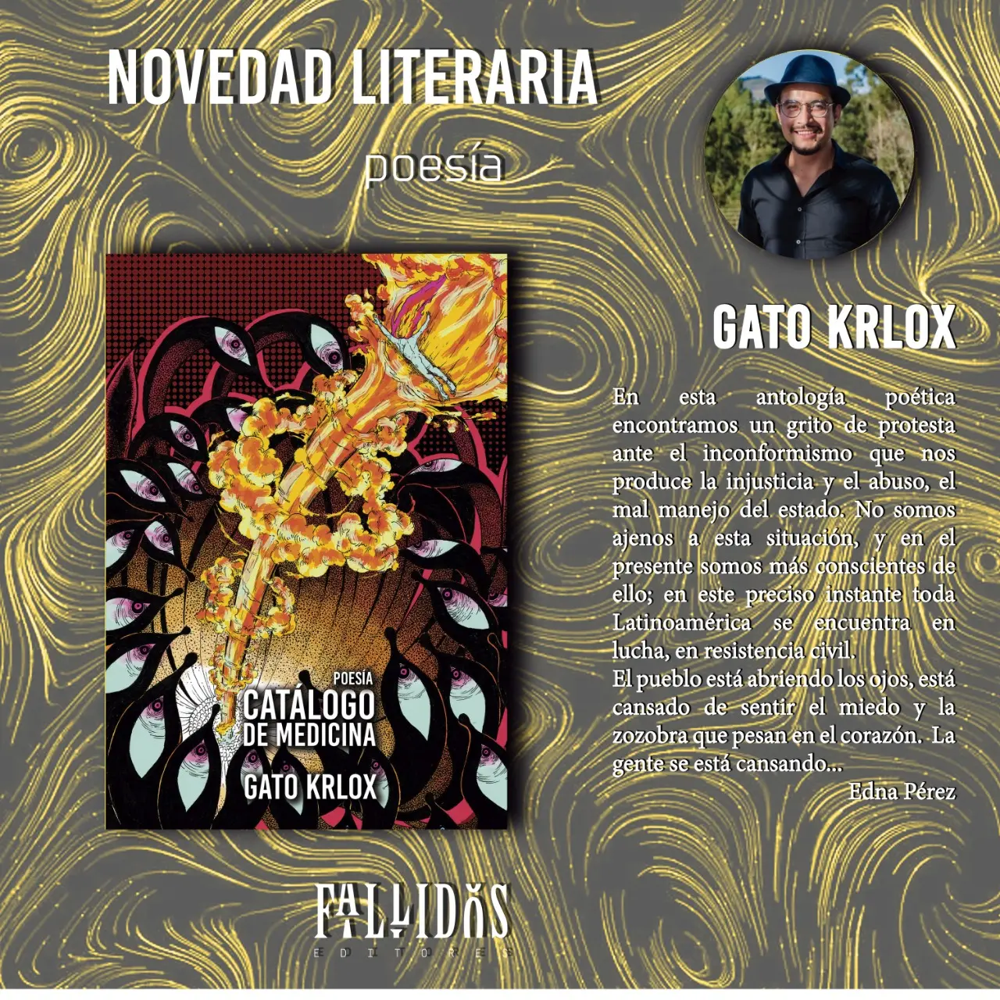
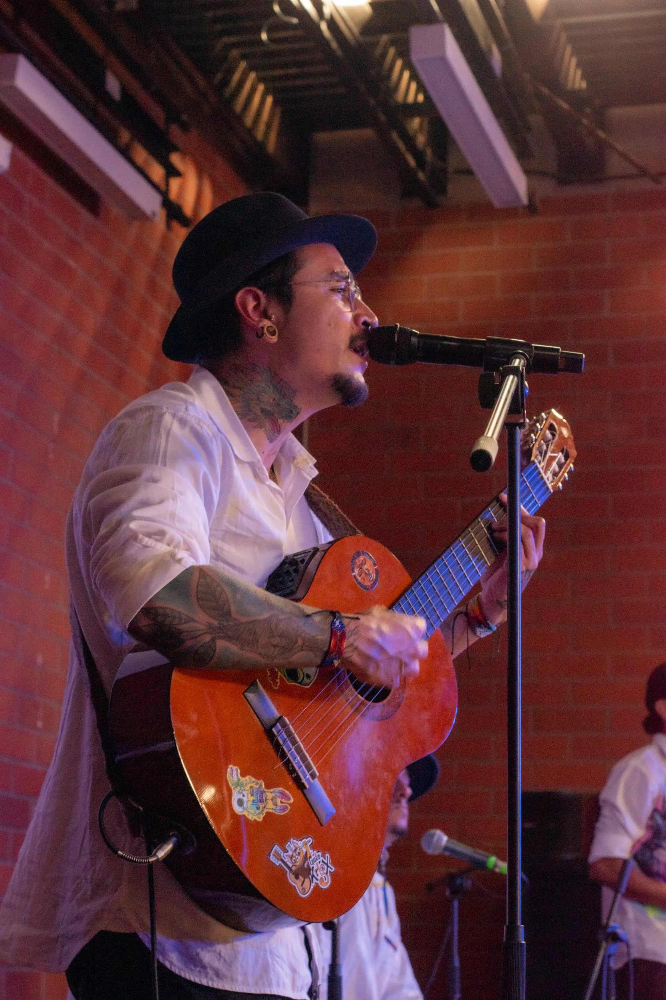

Reseña cronológica de reconocimientos y obras publicadas
- Ganador de la Convocatoria Somos Cultura Gobernación de Boyacá, 2020
- Ganador del registro Mapa sonoro Colombia Me Suena, periódico El Colombiano de Medellín, 2020
- Publicación en la Revista Carta Ecológica de Colombia, poemas Trilogía a la Madre Tierra, 2020
- Publicación en el libro de poesía Florilegio, Red Editorial, Popayán, Cauca 2020
- Ganador de la segunda Convocatoria de Estímulos a la Cultura Sogamoso, 2020
- Publicación del ensayo Real pandemia en el Fanzine Memorias en pandemia, Escritos, Fotografías e Ilustraciones de Autores Colombianos, 2020
- Artista invitado en el IV Encuentro Nacional de Escritores, Colombia, 2021
- Músico invitado en el Festival Internacional de la Cultura, Boyacá, 2022
- Músico Invitado al Espacio Cultural, Parque ARVI, Santa Elena, 2024
- Músico invitado al Festival Cultural Demostrarte, Santa Elena, 2024
- Músico invitado al festival Raíces Fest, COMFAMA, Río Negro, 2024
- Músico invitado Saludando a Oriente, Radio Chakaruna, El Carmen de Vivoral, 2024
- Músico invitado en el Festival de las Artes de Santa Elena, Medellín, 2025
- Artista invitado al Espacio cultural Entrevista con artistas del territorio, Biblioteca Pública, Santa Elena, 2025
Mis Eventos Pasados
Estos fueron algunos de mis eventos pasados, donde tuve la oportunidad de participar y aportar mi granito de arena con la música, compartiendo momentos únicos y especiales con cada uno de ustedes.





